Home Tab
The Home tab allows you to select tasks and commands associated with formatting and editing elements on a canvas. You can also switch between Design, Test, Runtime, and Online modes to view your graphics in different mode.
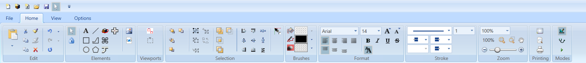
The Home tab contains the following groups:
Edit
The Edit group options allow you to work within the active canvas to cut, copy, paste, and format graphic elements, as well as undo, redo, and repeat actions on the canvas.
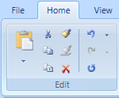
Edit Group | ||
Icon | Name | Description |
| Paste | Insert the clipboard contents onto the active canvas. The contents are inserted based on the following selections: Paste to selected layer: The copied content is inserted onto the layer currently selected in the Element Tree View’sSelected layer dropdown menu. Paste to original layers: The copied content is inserted onto the original layer of each object. For example, if you copy two objects, each from a different layer, a copy of each object is copied onto the layer they reside on. |
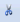 | Cut | Remove the selection from the active canvas and put it on the clipboard. |
Copy | Copy the selection to the Clipboard. | |
Copy XML | Copy the selected element as an XML string for the clipboard. | |
| Copy Format
| Copy property formatting to an element on the active canvas. |
| Paste Format
| Apply property formatting to an element on the active canvas. |
| Delete
| Remove the selection from the active canvas. |
| Undo | Undo an action from a list of the most recent actions. |
Redo | Redo an action from a list of the most recent actions. | |
Repeat | Repeat the last action performed. | |


Elements
The Elements group options allows you to create and work with graphic elements on the canvas, as well as insert images, animation objects, XAML files, and AutoCAD files.
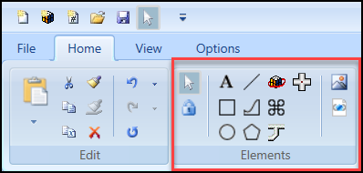
Elements Group | ||
Icon | Name | Description |
Select Objects | View when the select objects cursor mode is active. When the select objects cursor mode is active, the button background color is yellow. | |
Freeze | Allows you to draw a selected element repeatedly without having to reselect the element. The Freeze command can be selected directly, or each time you click the same element consecutively the Freeze command for that element is toggled on and off. NOTE: Freeze mode is disabled for the Pipe element. | |
| Text | Allows you to create a text block on the canvas. |
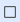 | Rectangle | Allows you to draw rectangles and squares on the canvas. |
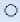 | Ellipse | Allows you to create ellipses, arcs, and pie shapes on the canvas. |
Line | Allows you to draw a geometric line between two distinct points on the canvas. | |
Path | Allows you to create a series of line segments and curves on the canvas. | |
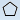 | Polygon | Allows you to create a polygon on the canvas. |
Animation | Allows you to Insert a configurable animation object on the canvas. | |
Pipe | Allows you to draw two-dimensional pipes. | |
Pipe Coupling | Allows you to create coupling objects and connect pipe elements. | |
Command Control | Allows you to create a control element that is configurable and can be commanded. With the command control you can configure a numeric, string, or password field, a numeric slider or rotator , and a drop-down control. | |
Import Image File | Navigate to and insert an image, for example, .BMP, .GIF, .JPG, TIF. | |
Import AutoCAD and XML Image Files | Navigate to and insert XAML, XPS, and convert AutoCAD files using the AutoCAD Importer. | |

Viewports
The Viewports group options allow you to enable the Manual Page mode and draw a manual page on the active graphic.
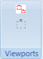
Viewports Group | ||
Icon | Name | Description |
| Viewport Mode | Enable the Manual Viewport mode. All existing viewports in the active graphic display and the Manual Viewport Mode icon is active. |
| Manual Page | Manually draw a graphic viewport on the active canvas. |


Selection
The Selection group options allow you to arrange, group, combine, and align elements on the canvas.
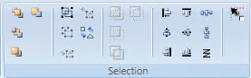
The following options are available from the Selections group:
- Order
- Group
- Combine
- Alignment
- Snap
Selection Group | ||
Order Options The Order options allow you to arrange overlapping graphical elements in a stacking order. | ||
Icon | Name | Description |
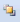 | Bring to Front | Move the graphical element to the front of the stack. |
Send to Back | Move the graphical element to the back of the stack. | |
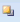 | Bring Forward | Move the graphical element forward one level in the stacking order. |
Send Backward | Move the graphical element backward one level in the stacking order. | |
Group Options The Group options allow you to combine multiple graphic elements into groups or separate individual graphic elements from groups. | ||
Icon | Name | Description |
Group | Combine multiple graphic elements into a group so that when one element is repositioned, all the other elements move with it. | |
Ungroup | Separate individual graphic elements from a group so that they can be repositioned independently. | |
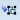 | Join Group | Add one or more graphic elements to an existing group. |
Leave Group | Remove one or more graphic elements from a group. | |
Join or Leave Command Control | Join or remove a child element such as an intended cursor or Thumb for a command control element. | |
Combine Options The Combine options allow you to combine or exclude areas of overlapping graphical shapes. | ||
Icon | Name | Description |
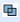 | Union | Combine all parts of two elements into one path element. |
Intersection | Create a new path element shaped by the overlapping portions of two elements. | |
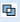 | Exclude Overlap | Combine two elements to create a new path element. Any overlapping portions are excluded. The excluded portion is transparent. |
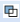 | Subtraction | Create a new path element that is based on the first selected element minus the overlapping portions of the two elements and the second selected element. |
Alignment Options The Alignment options allow you to set the placement of multiple elements on the canvas. | ||
Icon | Name | Description |
| Align Left | Align the selected elements with the left edge of the element farthest to the left. |
| Align Center | Align selected elements to the center of the widest element so that the horizontal center of all elements is set to the horizontal center of the widest element. |
| Align Right | Align the selected elements with the right edge of the element farthest to the right. |
| Align Top | Align the selected elements with the top edge of the element farthest to the top. |
| Align Middle | Align selected elements to the middle of the tallest element so that the vertical middle of all elements is set to the vertical middle of the tallest element. |
| Align Bottom | Align the selected elements with the bottom edge of the element farthest to the bottom. |
| Horizontal Spacing | All selected elements are aligned so that they have even spacing between them with respect to the X-axis. |
| Vertical Spacing | All selected elements are aligned so that they have even spacing between them with respect to the Y-axis. |
| Align Wrapped | Align the selected elements on the canvas in a row from left to right and the rows from top to bottom. When you drag-and-drop multiple elements onto the canvas, they are by default Align wrapped. |
Snap Option | ||
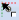 | Snap Now | Snap the top-left corner (or anchor) of an element (or Symbol) to the nearest grid intersection. |


Brushes
The Brushes group allows you to select a color from the drop-down menu for the fill, stroke, and background colors of the currently selected element on the canvas.
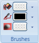
Brushes Group | ||
Icon | Name | Description |
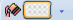 | Fill | Set the color that is applied to the Fill (interior) property of the selected elements. |
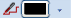 | Stroke | Set the color that is applied to the Stroke property or the font color of the selected elements. |
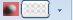 | Background | Set the color that is applied to the Background property of the selected element on the canvas. |
Format
The Format group allows you to adjust the font styles and formatting of textual graphic elements.
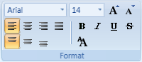
Format Group | ||
Icon | Name | Description |
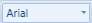 | Font Family | Select a font type from the drop-down menu. |
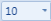 | Font Size | Specify a font size from the drop-down menu. |
Increase Font Size | Increase the font size to a pre-determined default. | |
Decrease Font Size | Decrease the font size to a pre-determined default. | |
| Horizontal Text Alignment | Set the horizontal position of the text contained within the element’s bounding rectangle. Options are: Right, Center, Left, and Justify. |
| Vertical Text Alignment | Set the vertical position of the text contained within the element’s bounding rectangle. Options are: Top, Center, and Bottom. |
Bold | Apply bold formatting to the selected text. | |
Italic | Apply italic formatting to the selected text. | |
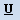 | Underline | Apply underline formatting to the selected text. |
Strikethrough | Apply strikethrough formatting to the selected text. | |
| Resize Fonts | Toggle between enabling the Font Size property of an active element to automatically update according to any resizing done on the canvas. If inactive, the font size of the selected element remains as initially set in the Property view. |


Stroke
The Stroke group allows you to format an element’s outline by choosing options from a set of stroke-related drop-down menus. You can select the overall type and thickness of the stroke. You can also choose a flat, round, square, or triangle for the starting and ending edge of a line or figure. If the active element has unconnected lines you have the option of setting the end caps for each segment.
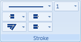
Stroke Group | ||
Icon | Name | Description |
Stroke Dash Array | Select the stroke type from the drop-down menu. | |
| Stroke Thickness | Select the stroke thickness from the drop-down menu. The thickness is measured in pixels. |
Stroke Start Line | Set how the start edge of the stroke line is drawn. Options are: flat, round, square or triangle edge. | |
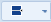 | Stroke End Line | Set how the end edge of the stroke line is drawn. Options are flat, round, square or triangle edge. |
Stroke Line Join
| Set how the corners are drawn. Options are: pointed, flat, or rounded corners | |
Stroke Dash Cap
| Select a style for the end of the line . 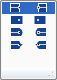 | |
Zoom
The Zoom group options allow you to pan, or zoom in or out of a graphic image.
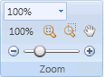
Zoom Group | ||
Icon | Name | Description |
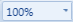 | Zoom Indicator | Display the current scale factor of the active canvas and allows you to either select a pre-defined magnification from the drop-down menu or type a magnification value. |
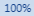 | 100% button | Display the active graphic at 100% magnification when the button is clicked on. |
Fit Size | Scale the graphic so that all the elements and contents on the canvas are visible. | |
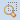 | Free Zoom | Draw a zoom rectangle directly on the canvas. Repeat as needed. |
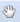 | Pan | Move the graphics viewing area up, down, or sideways to display other areas which, at the current viewing zoom factor, lie outside the viewing area. |
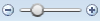 | Zoom Slider | Zoom in on the active canvas by adjusting the slider. |
Printing
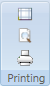
Printing Group | ||
Icon | Name | Description |
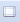 | Page Setup | Open and display the print Page Setup view. |
Preview | Open the Print Preview pane and displays the currently selected graphic. | |
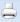 | Display the Print dialog box to print the current graphic\document. | |
Modes
The Modes group allows you to toggle between Design, Test, or Runtime mode.
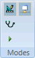
Modes Group | ||
Icon | Name | Description |
| Design | Design and edit graphics and apply static values only. |
| Test | Design, edit graphics and simulate data point values. You can use online subscriptions if the Online mode is enabled, or you can use subscriptions from the Value Simulator. |
| Runtime | Test a graphic to see how it will display in the Graphics Viewer, by simulating data point values using online subscriptions, if the Online mode is enabled, or using subscriptions from the Value Simulator. Runtime mode does not allow you to design or editing a graphic. |
Online
| Allows you to subscribe to COVs in an actual online environment. If disabled, data point values can be simulated with the Value Simulator. | |